Goal-Setting Guide
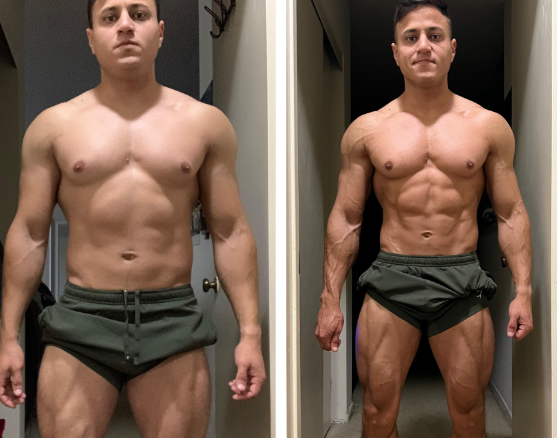
What is cutting?
Cutting is a phase in muscle building that involves reducing body fat while maintaining muscle mass, resulting in a lean and defined physique. This is achieved through a combination of calorie reduction, resistance training, and cardiovascular exercise.
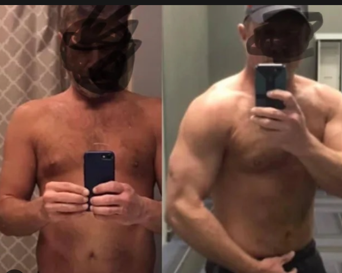
What is bulking?
Bulking is a phase in muscle building that involves increasing calorie intake and performing resistance training exercises to gain muscle mass and size. The goal of bulking is to consume more calories than the body burns, which provides the energy and nutrients needed for muscle growth.
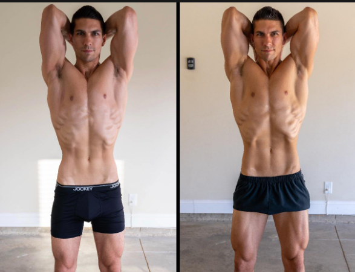
What is maingaining?
Building muscle while maintaining body fat, also known as body recomposition, involves gaining muscle mass while simultaneously losing body fat or maintaining a consistent level of body fat. This is achieved through a combination of resistance training, cardiovascular exercise, and appropriate nutrition, including a balanced diet with adequate protein intake.
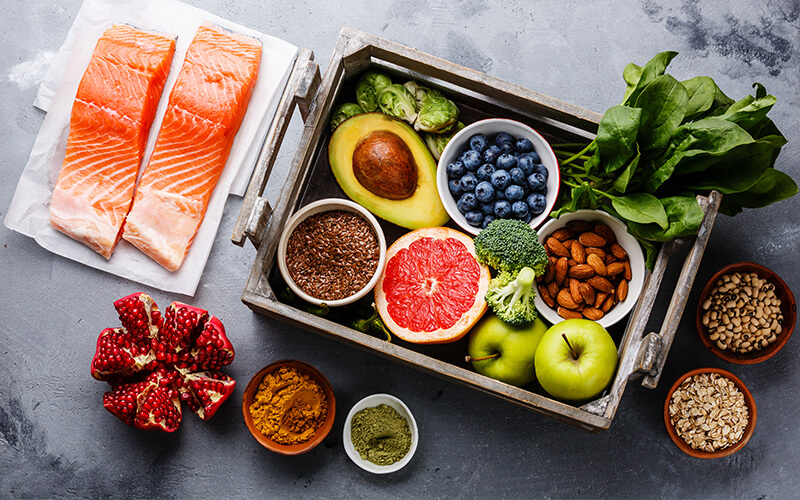
Eat Clean Foods
Eating clean foods with healthy micronutrients provides the energy, nutrients, and support for recovery and overall health needed for muscle building and hypertrophy training.
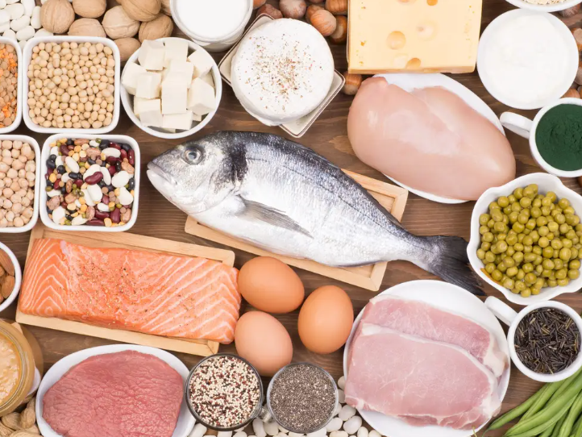
How many grams of protein do you need?
A general guideline for protein intake to support hypertrophy training is to consume around 1.6 to 2.2 grams of protein per kilogram of body weight per day.
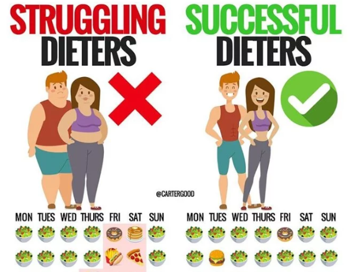
How many grams of calories for cutting?
For cutting (reducing body fat while maintaining muscle mass): A calorie deficit of 10-20% below maintenance levels is typically recommended. This means consuming around 250-500 fewer calories per day for most people.How many grams of calories for maingaining?
For maintaining (maintaining muscle mass and body composition): Consuming maintenance level calories is recommended. This means consuming the same amount of calories that the body burns on a daily basis, which can be calculated using various online calculators or formulas.
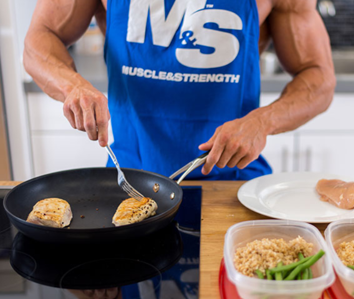
How many grams of calories for bulking?
For bulking (building muscle mass): A calorie surplus of 5-10% above maintenance levels is typically recommended. This means consuming around 250-500 additional calories per day for most people.
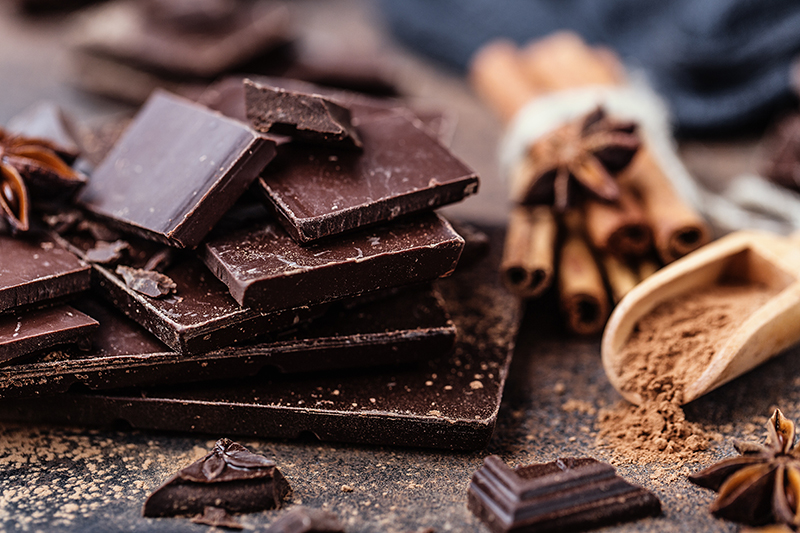
Eat dark chocolate in your pre-workout
Eating 70% cocoa dark chocolate before hypertrophy training may have some potential benefits due to its antioxidant and vasodilatory effects, but it should be consumed in moderation and not replace a balanced pre-workout meal or snack.
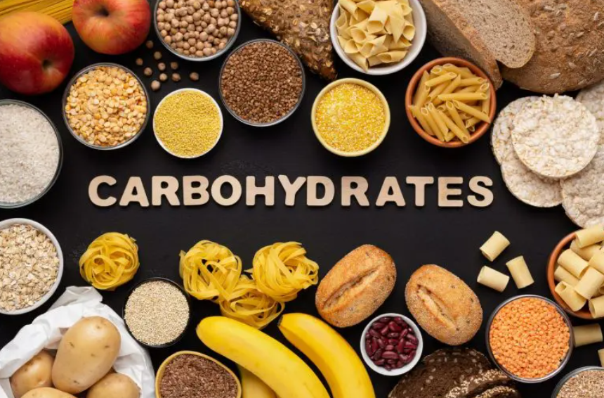
How to eat carbs for training?
Consume carbs before and after workouts: Consuming carbohydrates before and after workouts can help provide energy and support muscle recovery. Aim to consume a mix of simple and complex carbohydrates, such as fruit, whole grains, and starchy vegetables.
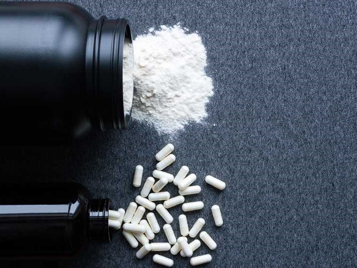
Creatine supports training and muscle recovery
Creatine helps with muscle growth and hypertrophy training by increasing ATP production, which provides energy for muscle contractions, and by promoting water retention within muscle cells, which can lead to increased protein synthesis and muscle growth.
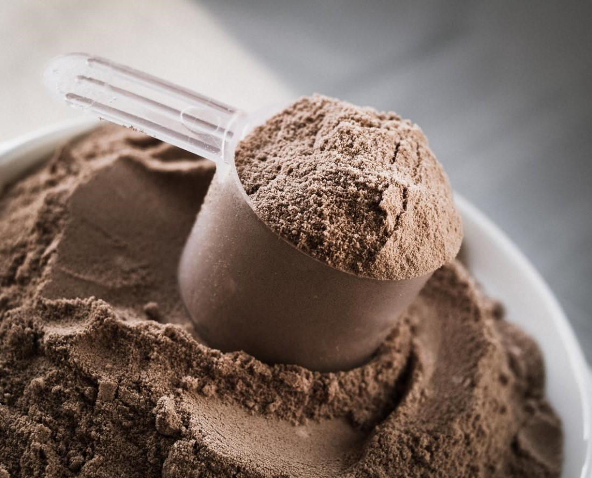
Whey Protein helps training and muscle recovery
Whey protein helps with muscle growth and hypertrophy training by providing the body with essential amino acids, the building blocks of muscle tissue. Whey protein is quickly absorbed and can increase protein synthesis, leading to muscle growth and repair.
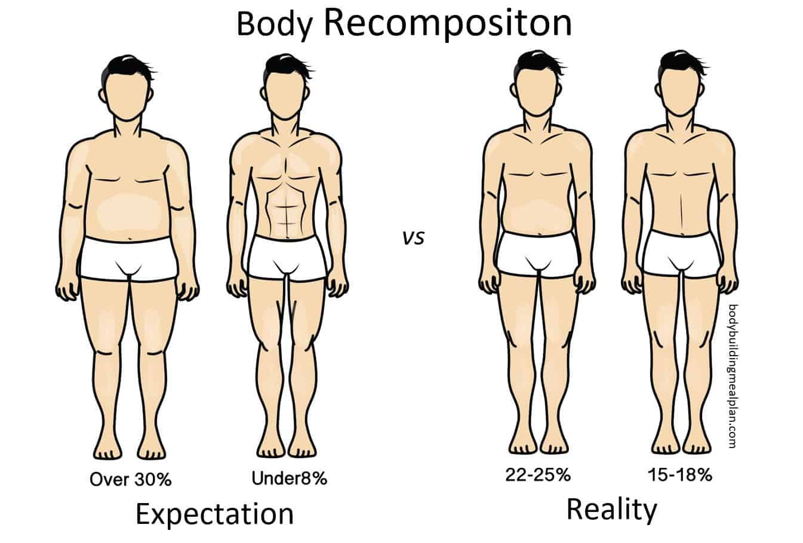
When to cut?
If you have a high body fat percentage and want to lose fat while maintaining muscle mass. If you have already gained muscle mass and want to achieve a leaner physique. If you have a specific deadline, such as a competition or event, and need to lose weight quickly.
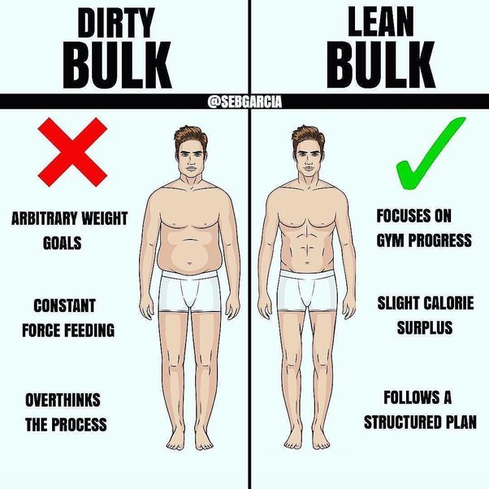